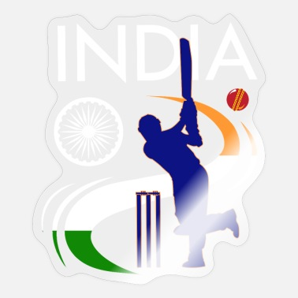

ICC WORLD CUP 2011
_____
INDIA VS SRILANKA
SCORECARD
BATSMAN
R
B
4s
6s
SR
Akamai
93
64
6
64.0
64.0
Micron
40
31
3
31
33.1
First Horizon
66
22
2
2
20.2
Lungi
47
12
1
2
17.2
Altera
39
50
4
2
15.0
ROHIT
33
10
5
0
64.0
MSD
95
61
8
4
120
KHOLI
85
122
6
2
20.2
Banschare
33
10
5
0
64.0
Altolandia
36
14
5
1
65.0
Yuvraj
41
38
8
0
11.5